You can test your sense of rhythm at any time.
Check your sense of rhythm with just three different rhythm tests.
You can easily check your friends' and family's sense of rhythm too!
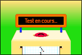
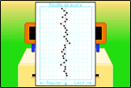
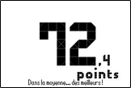
Press the buttons to enjoy toys that make sounds.
There are no rules, so how you enjoy them is up to you.
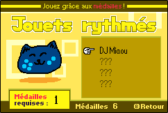
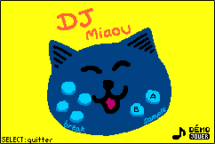
With the Cat Machine, which can be played with just 1 medal, you can press buttons to play cat meows and create a fun rhythm.
The more medals you earn in the rhythm games, the more endless games you unlock!
These games continue endlessly until you fail. Aim for a high score!
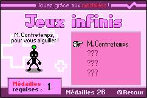
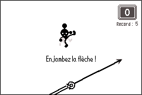
Mr. Upbeat is a simple game where you step over a metronome needle to the offbeat of the song. - playable with just 1 medal.
Press the buttons for a fun drumming experience!
You can take drum lessons based on the number of medals you have.
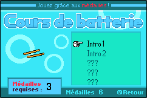
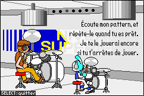
Step by step, steadily level up!
With enough practice, you might even be able to play the drums as well as a pro!
Take a quick break between rhythm games.
You might even be able to get some hints!
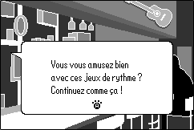
You can read various articles related to the game.
A special reward awaits for those who achieved a perfect in the rhythm games!
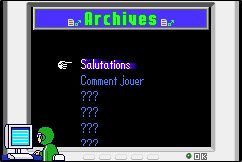
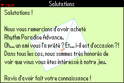
You can listen to songs from the games, or play drums along with the game's music.
You can even save your drum performance and listen to it again later!
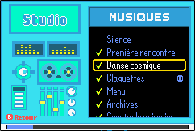
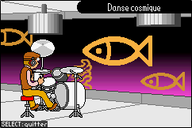
You can take your time and enjoy the in-game music.